Immemorabilis 1.0
iPhone 6.5-inch
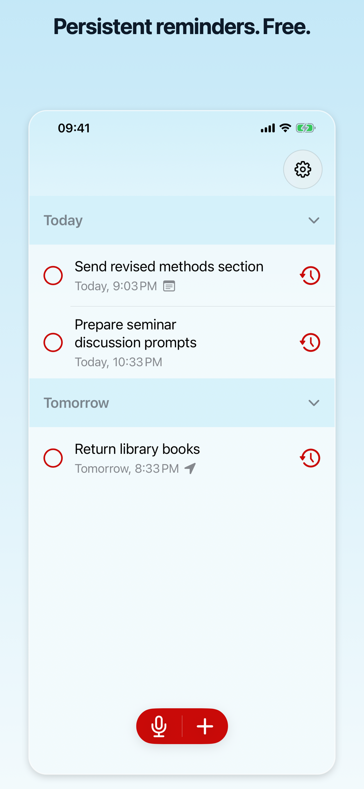
1. Persistent reminders
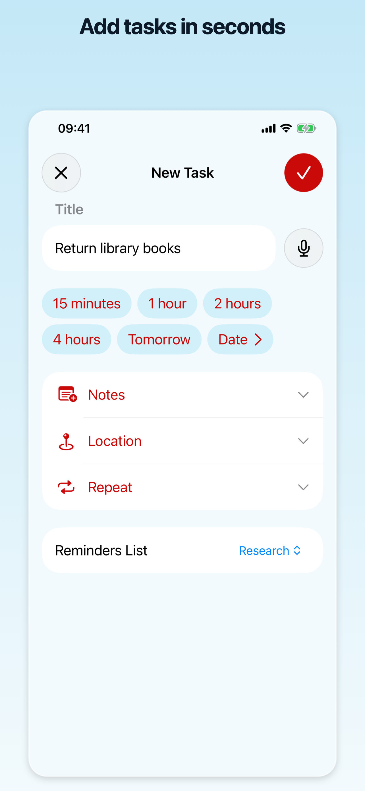
2. Quick capture
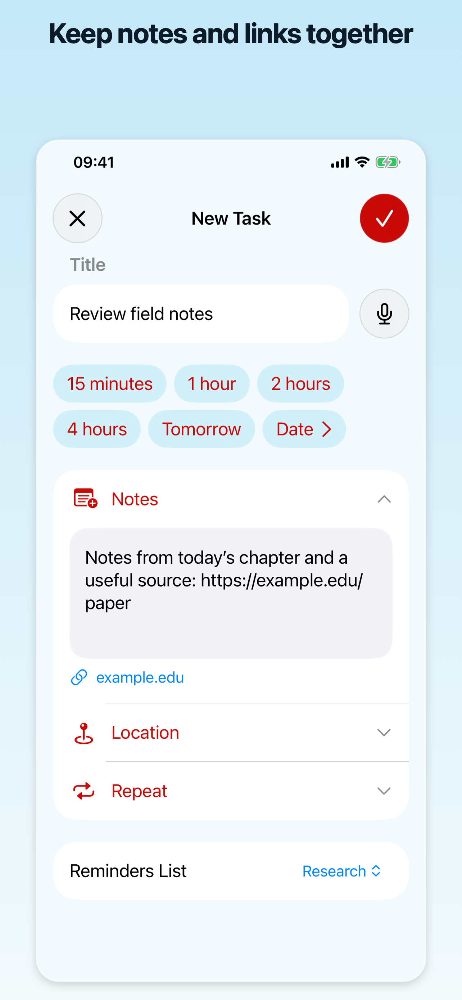
3. Notes and links
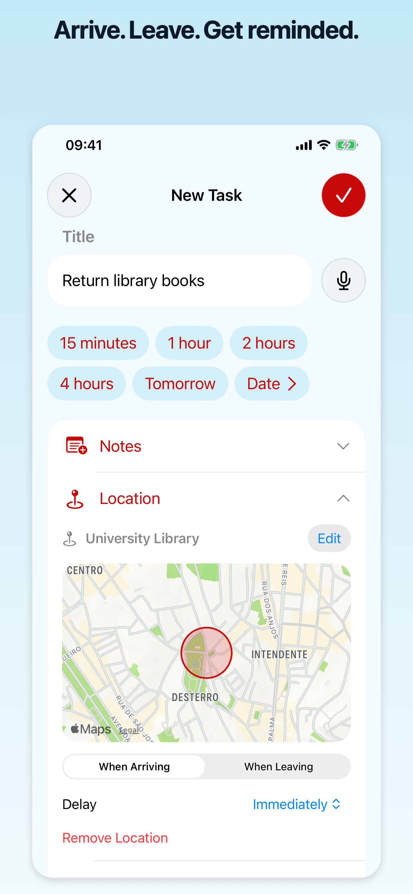
4. Location reminders
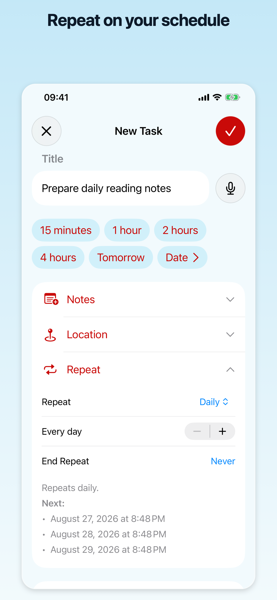
5. Repeat rules
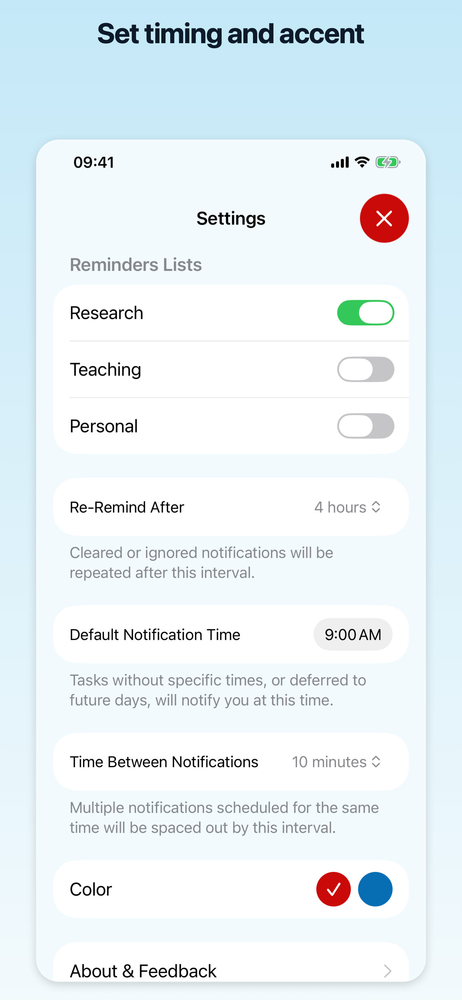
6. Settings
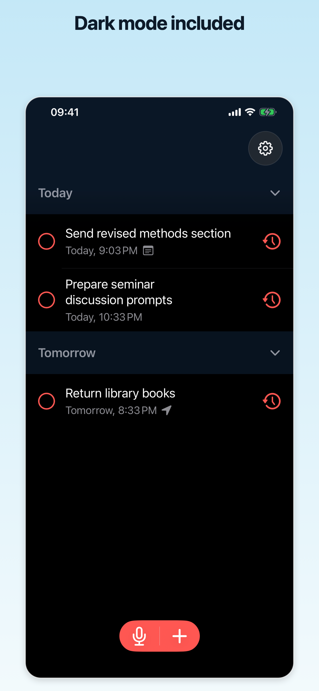
7. Dark mode
iPad 12.9-inch
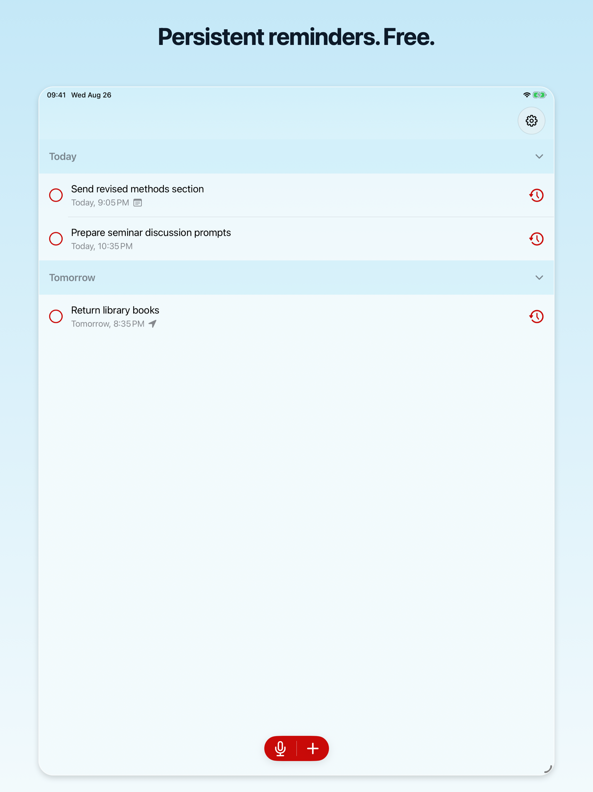
1. Persistent reminders
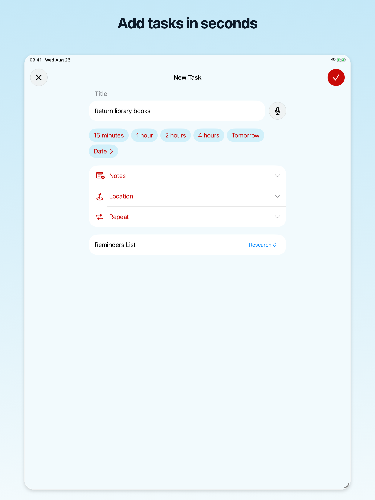
2. Quick capture
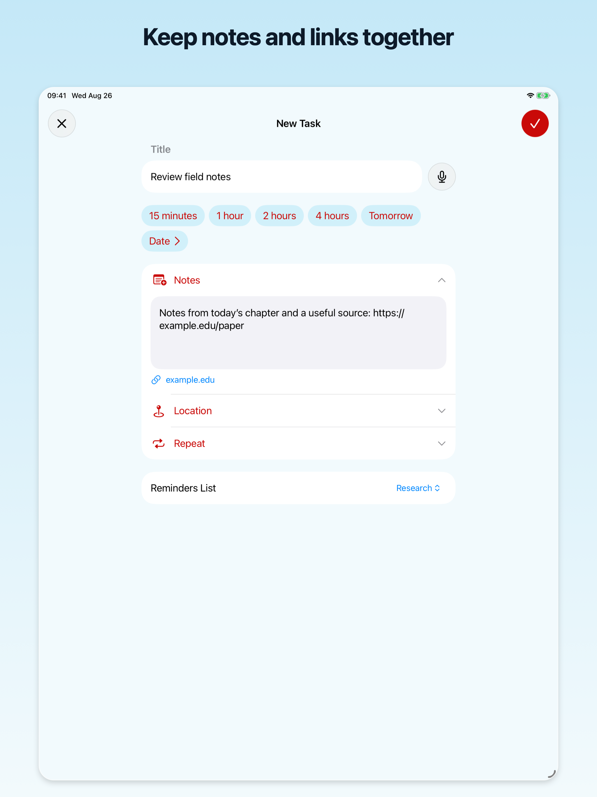
3. Notes and links
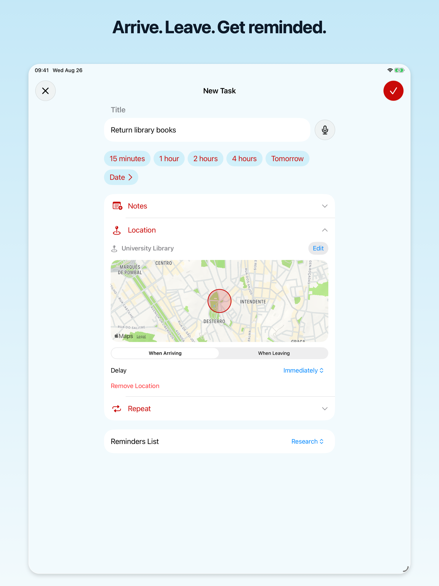
4. Location reminders
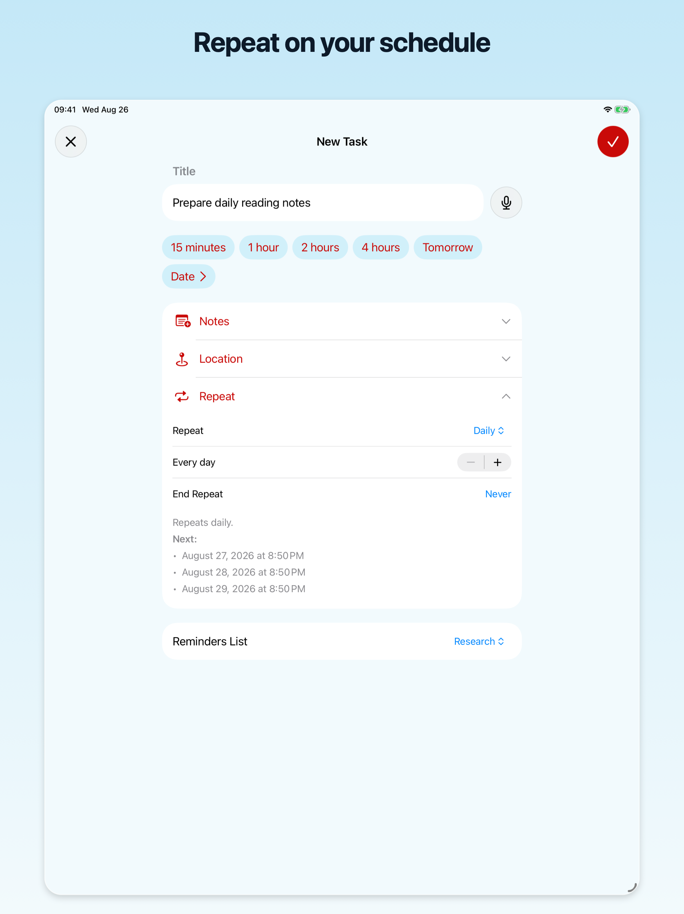
5. Repeat rules
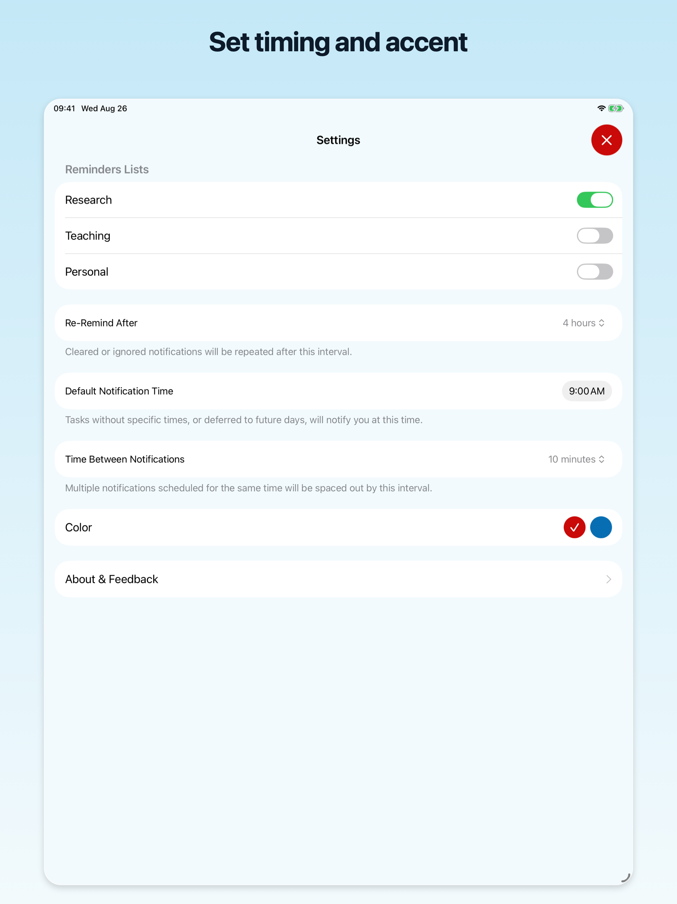
6. Settings
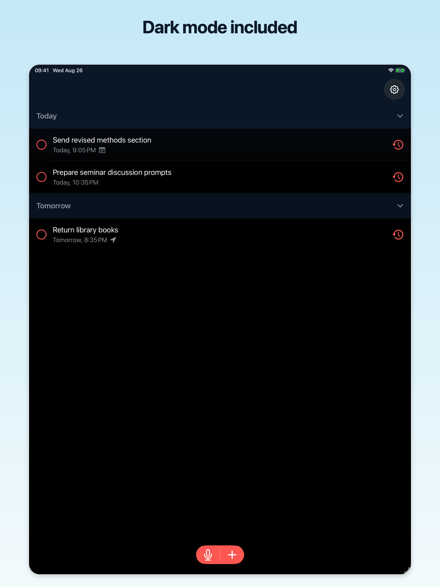
7. Dark mode